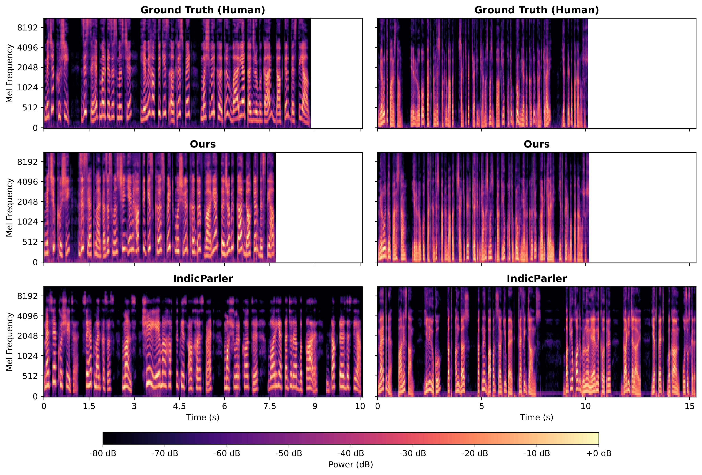

Kashmiri is spoken by around 7 million people, but remains critically underserved in speech technology. despite its official status and rich linguistic heritage. The lack of robust Text-to-Speech (\texttt{TTS}) systems limits digital accessibility and inclusive human-computer interaction for native speakers. In this work, we present the first dedicated, open-source neural \texttt{TTS} system designed for Kashmiri. We show that zero-shot multilingual baselines trained for Indic languages fail to produce intelligible speech, achieving a Mean Opinion Score (MOS) of only 1.86, largely due to inadequate modeling of Perso-Arabic diacritics and language-specific phonotactics. To address these limitations, we propose Bolbosh, a supervised cross-lingual adaptation strategy based on Optimal Transport Conditional Flow Matching (OT-CFM) within the Matcha-TTS framework. This enables stable alignment under limited paired data. We further introduce a three-stage acoustic enhancement pipeline consisting of dereverberation, silence trimming, and loudness normalization to unify heterogeneous speech sources and stabilize alignment learning. The models's vocabulary is expanded to explicitly encode Kashmiri graphemes, preserving fine-grained vowel distinctions. Our system achieves a MOS of 3.63 and a Mel-Cepstral Distortion (MCD) of 3.73, substantially outperforming multilingual baselines and establishing a new benchmark for Kashmiri speech synthesis. Our results demonstrate that script-aware and supervised flow-based adaptation are critical for low-resource TTS in diacritic-sensitive languages.
These audio samples were synthesized by Bolbosh using our two high-quality Rasa speakers. Generation was performed using a Conditional Flow Matching (CFM) decoder and synthesized into waveforms via a HiFi-GAN vocoder.
مےٛ چھُ آز سُلۍ وۄستادَس نِش گَژھُن، سُہ پرناوِ مےٛ آز بَدل کانٛہہ سبَق۔
بہٕ ییٛلہِ آزٕ صُبحٲے دراس، اَتہِ ٲسۍ واریاہ لُکۍ درامٕتۍ چَکرَس۔
مےٛ رۄٛن پنٕنہِ وارِ ہُنٛد حاکھ ۔ أتھ گوو سیٹھا مزٕ ژٕتہِ وُچھُس نوٗن کٮ۪وٛتھ چُھس۔
سُہ گوو ٲدۍ کانٛدرَس نِش ژۄٹ اننہٕ۔ واریاہ کالہٕ گووُس گمتٕس مَگر وٕنہِ آو نہٕ کینٛہہ۔
سۄ سَمکھٔے نہٕ تتہِ کہیٖنۍ۔ سُۄ ٲسۍ گٔمٕژ ماتامال راتس روزنہٕ خٲطرٕ۔
گوٗر ییہِ صُبہٕچہِ دہہِ بجہٕ دۄدھ ہیتھ ۔ تٔمِس چھُ آسان کٔمٕے دۄدھ، یِنہٕ ژے دۄدھ رٹُن مشِتھ گژھی۔
بہٕ گووُس راتھ پنٕنِس باغس منٛز۔ تتہِ کھیُو مےٛ صُبحٲے أکھ ژوٗنٹ پتہٕ کھیم شامس زٕ ژوٗنٹۍ۔
سٲنِس علاقس منٛزبنٲوِکھ زٕ نٔے سکوٗل تہٕ بیٚیہِ أکھ کالیج کینٛہہ وقھت برونٛٹھ ۔
آز چھُ یتھ اوبُر تہٕ تٖرتہِ چھِ واریاہ زیادٕ بہٕ گژھنہٕ امہِ موٗجوٗب آز نیبر کینٛہہ۔
تاکھچَس پٮ۪ٹھ تھٔومٕتِس یِتھ سامانس چٕھ واریاہ گرٕد کھٔژمٕژ، أتھ دِتہٕ ہایہِ ژٕنڈ۔
میانہٕ بینہٕ چھُ لۄکٕٹۍ لۄکِٹۍ شُرۍ، سُۄ چھِ تِمن سۭتۍ دۄہس آوٕر آسان۔
دۄہَس اُوسُس بہٕ کٲم کران کارخانَس منٛزٕ۔ بہٕ تھۄکُس سٮ۪ٹھا۔ وونۍ کَڑٕ بہٕ تَھکھ تامَتھ ۔
مےٛ دیُوت تٔم کرِہُن شال کلس دِنہٕ خٲطرٕ، مگر مےٛ گوو سُہ خبَر کیوٚتھ۔ بہٕ لاگنہٕ سُہ کینہہ۔
ژےٛ گومُت چھُے پران پران أچھَن وۄزجار۔ یِم چھَلُکھ تٕرنہِ آبہٕ سۭتۍ یِم گژھنۓ ٹھیٖکھ ۔
بہٕ اوسُس تٕمن دۄشوِنی دارِپیٹھ بِہِتھ تامشہٕ وُچھان زٕ یِم ہیکنہٕ یمہٕ سارۓ کٔنہِ تُلِتھ ۔
پتِمہِ ریتہٕ اوس واریاہس کالس روٗد پیوان، تہٕ شیٖن تہِ پیو ورایاہ، مگریمہٕ ریتہٕ پیو نہٕ وٕنہِ کینٛہہ۔
راتھ شامَس اوس کُس تام نفر میٲنِس مٲلِس ژھانڈان، بہٕ زانہن نہٕ کینٛہہ سُہ کُس اوس۔
دَپان چھٕ شامَس گژھِ بتہٕ سُلی سُلی کھیون، امہِ سۭتۍ چھُ زُو ٹھیٖکھ روزان۔
تٔمِس اوس اوترٕ کُس تام پرژھان زِ سُہ کتہِ چھُ روزان۔
راتَس دۄہَس چھٕ یمِ شُرۍ آسان گِندان تہٕ نَژان، تۄتہِ چھےٛ نہٕ أمہٕ تَھکان۔
Bolbosh replaces standard phonetic processing with robust character-level representations suitable for Kashmiri orthography, utilizing the Conditional Flow Matching (CFM) objective proposed in Matcha-TTS.
| System | MOS (↑) | 95% CI |
|---|---|---|
| Human (Ground Truth) | 4.614 | ± 0.059 |
| Bolbosh (Ours) | 3.634 | ± 0.061 |
| IndicParler (Baseline) | 1.864 | ± 0.065 |
| Model | Condition | MCD | rWER (%) | WER |
|---|---|---|---|---|
| Bolbosh | With Diacritics | 3.73 | 4.14 | 0.6935 |
| No Diacritics | – | 13.23 | 0.4665 | |
| IndicParler | With Diacritics | 4.73 | 46.75 | 0.9772 |
| No Diacritics | – | 100.32 | 0.8253 |

Comparison of Mel-Spectrograms between Ground Truth (Human), Bolbosh (Ours), and IndicParler.
@inproceedings{ashraf2026bolbosh,
title={Bolbosh: Script-Aware Flow Matching for Kashmiri Text-to-Speech},
author={Ashraf, Tajamul and Zargar, Burhaan Rasheed and Muizz, Saeed Abdul and Mushtaq, Ifrah and Mehdi, Nazima and Gillani, Iqra Altaf and Kak, Aadil Amin and Bashir, Janibul},
booktitle={Proceedings of Interspeech},
year={2026},
url={https://github.com/gaash-lab/Bolbosh}
}